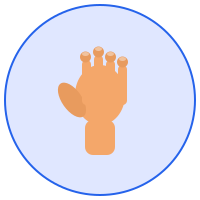
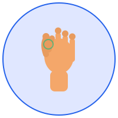
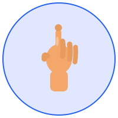
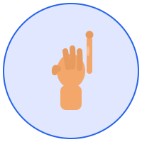
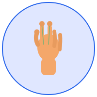
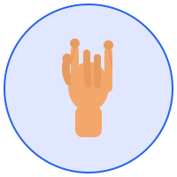

Verifikasi Struktur Baru & SVG Gestures
Verifikasi bahwa semua file sudah di-reorganisasi dengan benar.
✓ PASS HTML files di pages/ folder
✓ PASS CSS files di src/styles/
✓ PASS SVG files di public/gestures/
✓ PASS JS services di src/services/
✓ PASS Enhanced JS di src/js/
6 gesture SVG sudah tersedia. Klik untuk lihat:

Hai

Nama saya

Saya

Halo

Terima kasih

Senang bertemu
Verifikasi bahwa internal links sudah update dengan benar:
✓ HTML pages Semua link internal di pages/*.html menggunakan href="./page-name.html"
✓ CSS references Semua CSS links point ke ../src/styles/
✓ Asset paths CDN links dan manifest tetap intact
Fitur-fitur baru sudah tersedia untuk di-integrate:
✓ READY GestureDisplayService - SVG handling & debouncing
✓ READY Enhanced Gesture Mode - Debounce 800ms & text labels
⏳ PENDING Integration ke HTML pages - Ready for next phase
Lokasi penting yang harus diketahui:
📁 HTML Pages: pages/index.html, pages/app.html, pages/dashboard.html, dll
🎨 CSS Styles: src/styles/*.css
🖼️ SVG Gestures: public/gestures/*.svg
⚙️ Services: src/services/gestureDisplayService.js
📜 Enhanced JS: src/js/enhanced-gesture-mode.js
📖 Documentation: REORGANIZATION_SUMMARY.md
pages/index.html untuk use SVGGestureDisplayService di HTML pagesReorganisasi struktur COMPLETE! Semuanya siap untuk development fase berikutnya.
✓ Struktur rapi | ✓ SVG ready | ✓ Services ready | ✓ HTML optimized | ✓ CSS modular
Untuk detail lengkap, lihat: REORGANIZATION_SUMMARY.md